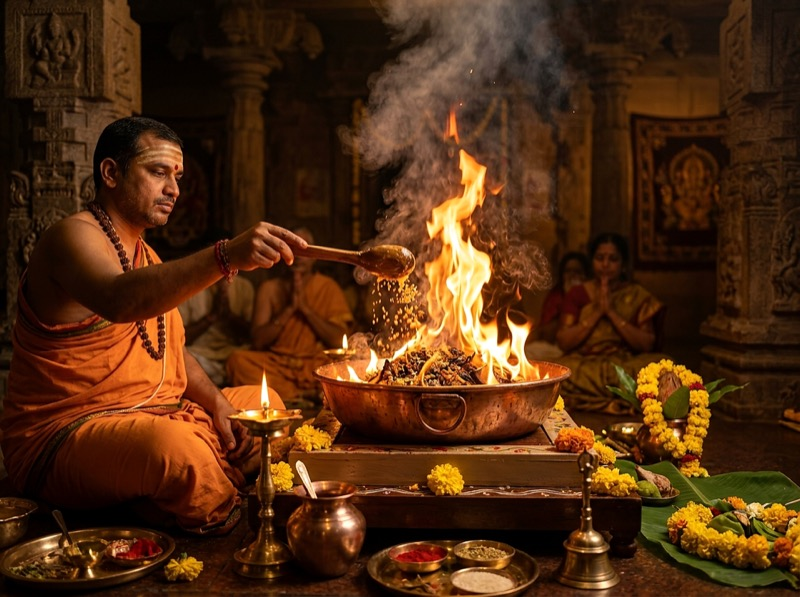

Apartment Havan & Fire Safety Guide Bangalore: Low-Smoke Vedic Vidhi

For North Indian families relocating to Bangalore's vibrant tech hubs—such as Whitefield, Sarjapur Road, and Electronic City—one of the most pressing concerns during Griha Pravesh, Satyanarayan Katha, or Navagraha Havan is how to conduct a traditional fire ceremony inside a multi-storey apartment.
Modern residential complexes in Bengaluru are equipped with sensitive optical fire sensors, centralized building alarms, and strict Resident Welfare Association (RWA) bylaws. Fortunately, Vedic Karmakanda has always prioritized environmental balance and family safety. In Shukla Yajurveda, Agni is described as Havya-Vahana—the divine messenger who receives offerings in a bright, radiant, smokeless flame.
Understanding Apartment Fire Systems: Detectors vs Sprinklers
To manage apartment fire safety intelligently, homeowners must understand how modern residential fire suppression systems function:
| Safety Mechanism | How It Works | Trigger Risk During Havan | Vedic Priest Precaution |
|---|---|---|---|
| Optical Fire Sensor | Uses infrared light beams to detect suspended carbon particles in the ceiling air. | Moderate if dense smoke rises vertically directly into the unit. | Position havan kund away from direct detector line; maintain cross-ventilation with balcony sliders open. |
| Thermal Heat Detector | Monitors rapid temperature spikes in kitchens and utility areas. | Extremely Low. | Controlled domestic havan flames produce localized heat that dissipates within 3 feet. |
| Fire Sprinkler Bulb | A heat-sensitive glass bulb containing glycerin that bursts only when ambient heat reaches 68°C (155°F). | Zero risk under standard procedures. | Keep havan fire at normal 6-to-10 inch flame height; never create bonfires. |
Essential Low-Smoke Havan Samagri
The primary cause of dense black smoke during domestic rituals is the use of unseasoned, damp wood or adulterated synthetic dhoop. When preparing your puja samagri list, prioritize these verified Shastric ingredients:
- Sun-Dried Mango Wood (Aam Ki Lakdi): Must be thoroughly cured and dry. Green or moisture-laden wood creates excessive carbon smoke.
- Pure Desi Cow Ghee: 100% natural A2 cow ghee burns with a clear, golden, smokeless flame that purifies the indoor air through natural volatilization.
- Bhimseni Camphor (Kapur): Pure, non-synthetic camphor leaves zero black ash and ignites the flame smoothly.
- Herbal Havan Samagri: Natural mixture of dry herbs, Guggal, Loban, Nagarmotha, Jatamansi, and dry coconut slivers.
- Dry Cow Dung Cakes (Gobar ke Uple): When properly dry, they provide steady, low-temperature embers ideal for mantra oblations.
Step-by-Step Apartment Havan Safety Protocol
Step 1: Society Notification & Gate Protocol
Inform your floor security or log a brief note in your apartment management app (MyGate, NoBrokerHood) indicating: "Griha Pravesh Puja & Controlled Havan in progress between 9:00 AM and 11:30 AM." This eliminates panic if security personnel notice the fragrance of havan samagri in common corridors.
Step 2: Floor Insulation & Thermal Protection
Never place an iron or brass havan kund directly onto vitrified tiles, Italian marble, or wooden flooring. Place two thick ceramic tiles or a thermal stone slab on the floor, cover it with dry sand or a brass plate, and elevate the havan kund on sturdy legs. This completely protects your floor tiles from discoloration or thermal stress.
Step 3: Creating Directional Cross-Ventilation
Identify your apartment's natural airflow path. Open the living room balcony sliding glass doors fully. If using the living room, switch on the ceiling exhaust or kitchen chimney on low draft, allowing air to flow from the entry door toward the balcony without creating gusty drafts that scatter ashes.
Step 4: Controlled Ahuti Oblations
An experienced Vedic priest will introduce samagri in rhythmic, measured quantities. Rather than dumping large handfuls of herbs that smother the embers and create thick smoke, each Ahuti (offering) with the Svaha mantra is calibrated to sustain a bright, luminous flame.
Step 5: Safe Extinguishing & Ash (Bhasma) Disposal
After the Purna Ahuti (final complete offering), allow the sacred fire to settle naturally into cooling embers. Never pour cold water directly onto hot brass, as this generates a burst of steam and ash. Once fully cooled, the sacred Bhasma can be mixed with water and reverently offered to home potted plants or a Tulsi plant.
Balcony Setup: The Preferred Modern Solution
In apartments with spacious utility balconies—common in modern developments like Prestige Lakeside Habitat, Salarpuria Serenity, and Divyasree Republic—many North Indian families choose to conduct the core Hawan section on the balcony.
The Gauri-Ganesh Pujan, Kalash Sthapana, and Navagraha invocation are conducted inside the living room altar. For the 30-minute Hawan phase, the priest and family step to the sheltered balcony, ensuring that 100% of smoke dissipates naturally into the Bangalore sky.
Frequently Asked Questions
Can we perform a Havan inside a Bangalore high-rise apartment?
Yes, absolutely. Thousands of North Indian families across Bangalore gated societies perform Havans during Griha Pravesh, Satyanarayan Katha, and Navagraha Shanti. By utilizing sun-dried mango samidha, elevated brass havan kunds placed over ceramic insulation, and controlled ghee oblations, smoke is minimized while fully preserving Vedic sanctity.
Will the Havan smoke trigger apartment fire sensors or water sprinklers?
Optical fire sensors can trigger if heavy, unventilated smoke rises directly into the sensor chamber. However, by establishing directional cross-ventilation, setting up the Havan away from direct vertical sensor lines (or in a balcony/utility area), and maintaining a clean, flame-centric fire with pure cow ghee, alarms are avoided. Fire sprinklers only activate under extreme thermal heat (typically 68°C+), which a controlled domestic havan never approaches.
Should we notify our apartment Owners Association (RWA) or security?
Yes, giving a courteous heads-up to your floor security or logging the ceremony on your society app (such as MyGate or NoBrokerHood) is best practice in complexes like Prestige Shantiniketan, Sobha Royal Pavilion, and Godrej Air. It prevents false alarms if a neighbor notices fragrant dhoop aroma.
Can the Havan be conducted on an apartment balcony?
Yes, conducting the Havan on an open balcony or covered terrace is one of the safest and most popular methods in modern Bangalore flats. Natural cross-draft dissipates smoke immediately into the open air while the family participates comfortably.
What samagri prevents black carbon smoke during an apartment Havan?
The key is using 100% seasoned, sun-dried mango wood (Aam ki Lakdi) or cow dung cakes (Desi Gobar Ke Uple) that contain zero moisture. Combining them with pure A2 cow ghee, natural camphor (Bhimseni Kapur), guggul, and loban generates a sweet-smelling, purifying white vapor rather than dense black soot.